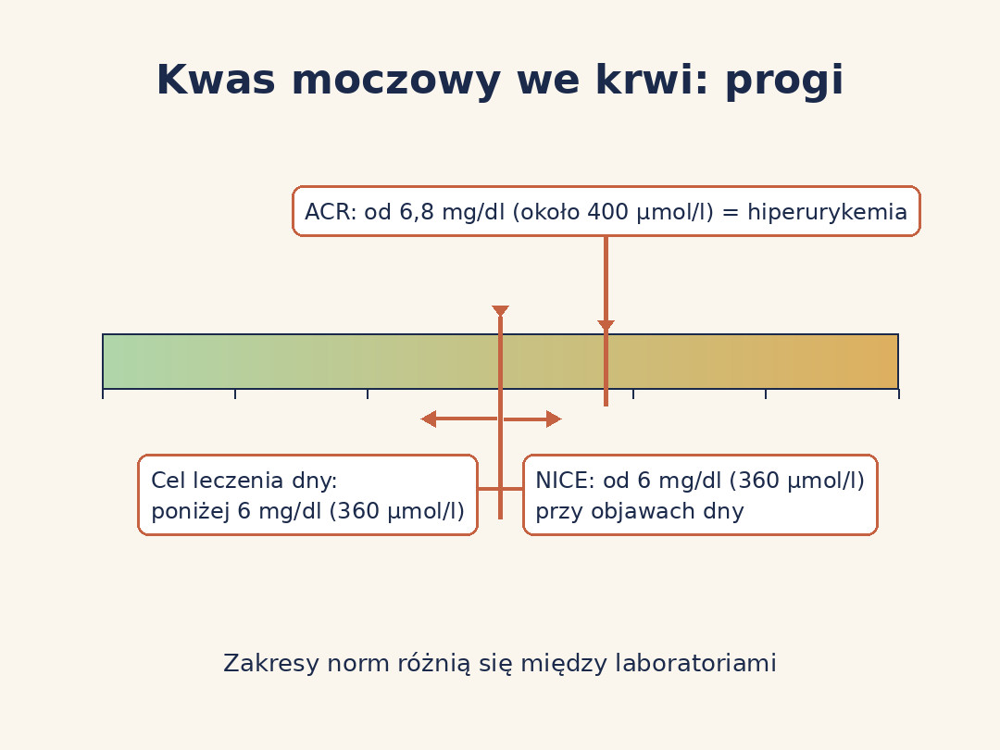
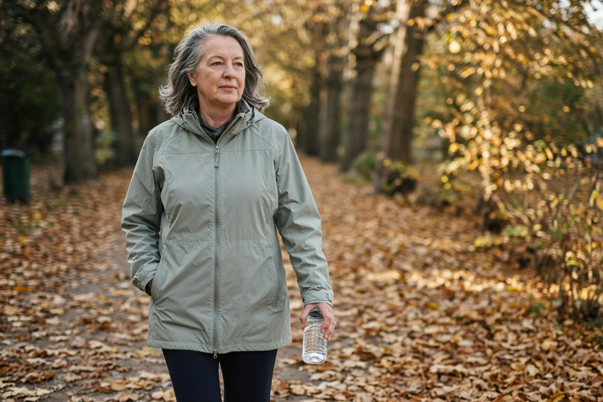
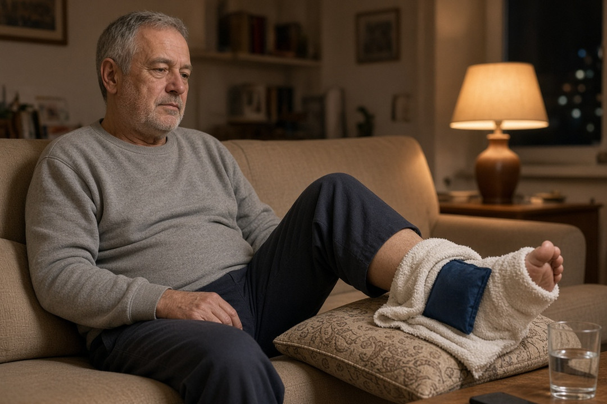
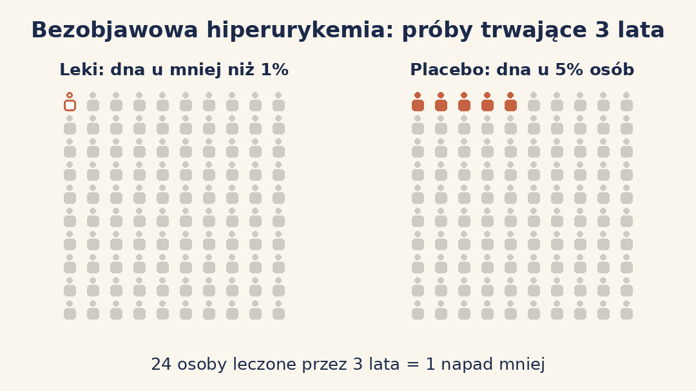
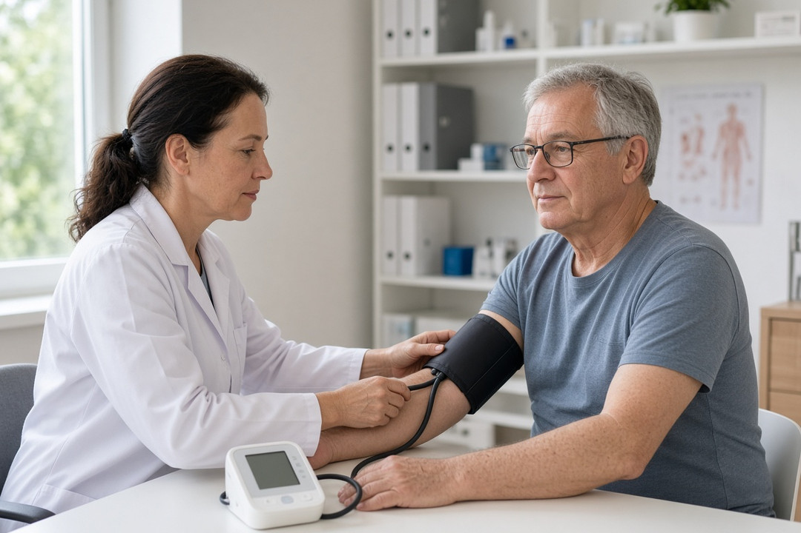
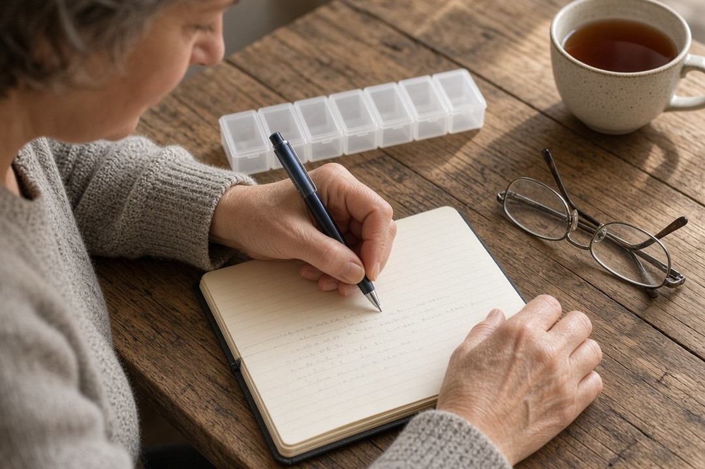
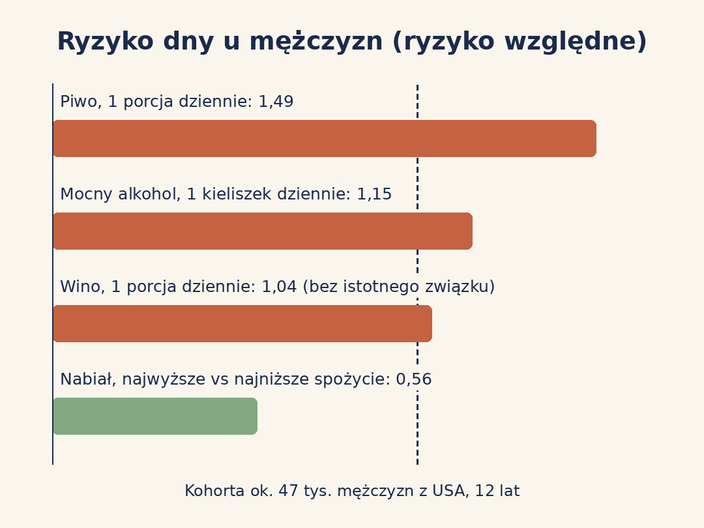

Podwyższony kwas moczowy po 50 to wynik, który często pojawia się w badaniach okresowych, ale sam w sobie nie jest diagnozą. Pokazujemy, od jakiej wartości lekarze mówią o hiperurykemii, dlaczego progi w różnych źródłach się różnią, co naprawdę wiadomo o diecie, sercu i nerkach oraz kiedy potrzebne są leki albo pilna wizyta.
Szybka odpowiedź
Wytyczne ACR nazywają hiperurykemią kwas moczowy we krwi od 6,8 mg/dl (około 400 µmol/l), ale bez napadów dny zwykle nie leczy się go lekami. Leczenie rozważa się, gdy pojawi się dna moczanowa, a celem jest wtedy wynik poniżej 6 mg/dl (360 µmol/l). Pilnie do lekarza idź, gdy staw nagle puchnie i boli, a do tego masz gorączkę.
Kluczowe wnioski
- Próg hiperurykemii zależy od źródła: ACR przyjmuje 6,8 mg/dl, a zakresy laboratoryjne różnią się dla kobiet i mężczyzn oraz między laboratoriami.
- Bez napadów dny i guzków dnawych ACR warunkowo odradza leki obniżające kwas moczowy: w 3-letnich próbach dna pojawiła się u mniej niż 1% leczonych i u 5% osób z grupy placebo.
- Związek kwasu moczowego z sercem i nerkami jest udokumentowany, ale próby CKD-FIX i ALL-HEART nie wykazały korzyści z allopurynolu u osób bez dny.
- Z ryzykiem dny najsilniej wiązały się w badaniach piwo, mocny alkohol i słodzone napoje, a nagły ból i obrzęk stawu z gorączką wymaga pilnej pomocy.
Jaka jest norma kwasu moczowego i od jakiego wyniku mówi się o hiperurykemii?
O hiperurykemii najczęściej mówi się, gdy stężenie kwasu moczowego we krwi wynosi 6,8 mg/dl lub więcej, czyli około 400 µmol/l. Taką definicję bezobjawowej hiperurykemii przyjmują wytyczne American College of Rheumatology (ACR) z 2020 roku, ale nie jest to jedyny próg, który zobaczysz w źródłach.
Zakres referencyjny na wydruku z laboratorium to coś innego niż próg kliniczny. MedlinePlus, serwis amerykańskiej Narodowej Biblioteki Medycyny, podaje przykładowe wartości prawidłowe 3,0–7,1 mg/dl u kobiet i 4,0–8,6 mg/dl u mężczyzn i zaznacza, że zakresy różnią się między laboratoriami. Górna granica dla mężczyzn jest więc wyższa niż próg 6,8 mg/dl z wytycznych ACR.
Różnice wynikają z tego, że progi powstały w różnych celach. Zakres laboratoryjny opisuje wartości spotykane u większości badanych, a progi kliniczne wiążą się z ryzykiem dny i z celem leczenia. W badaniu NHANES 2007–2008 (5707 dorosłych w USA) przyjęto jeszcze inne granice: powyżej 7,0 mg/dl u mężczyzn i powyżej 5,7 mg/dl u kobiet. Tak zdefiniowaną hiperurykemię miało 21,2% mężczyzn i 21,6% kobiet.
| Co oznacza próg | mg/dl | µmol/l (około) | Źródło i uwagi |
|---|---|---|---|
| Przykładowy zakres prawidłowy, kobiety | 3,0–7,1 | 180–426 | MedlinePlus; zakresy różnią się między laboratoriami |
| Przykładowy zakres prawidłowy, mężczyźni | 4,0–8,6 | 240–516 | MedlinePlus; zakresy różnią się między laboratoriami |
| Bezobjawowa hiperurykemia | od 6,8 | około 400 | ACR 2020; bez napadów dny i bez guzków dnawych |
| Potwierdzenie dny przy objawach | od 6 | 360 | NICE 2022; gdy wynik w napadzie jest niższy, powtórz badanie co najmniej 2 tygodnie po napadzie |
| Cel leczenia dny | poniżej 6 (w ciężkiej dnie poniżej 5) | 360 (300) | EULAR 2016, podobnie NICE 2022 |
| Definicja w badaniu populacyjnym NHANES 2007–2008 | powyżej 7,0 u mężczyzn, powyżej 5,7 u kobiet | 420 / 342 | Zhu i wsp. 2011, dorośli w USA |
Jeśli wynik masz w µmol/l, podziel go przez około 60, żeby otrzymać mg/dl; wytyczne NICE i EULAR przeliczają 6 mg/dl na 360 µmol/l. Przykładowo 420 µmol/l to około 7 mg/dl. Pojedynczy wynik nieco powyżej normy warto omówić z lekarzem, ale sam w sobie nie oznacza choroby.

Dlaczego kwas moczowy rośnie po 50?
Po 50. roku życia wynik częściej podnoszą menopauza, choroby nerek, nadciśnienie i niektóre leki niż sam wiek w metryce. Tak wynika z analizy danych kobiet w USA, w której wzrost kwasu moczowego z wiekiem tłumaczyły głównie menopauza, praca nerek, leki moczopędne i nadciśnienie.
W analizie NHANES III (lata 1988–1994, 7662 kobiety w USA w wieku od 20 lat) naturalna menopauza wiązała się ze stężeniem kwasu moczowego wyższym średnio o 0,34 mg/dl (około 20 µmol/l), a menopauza chirurgiczna o 0,36 mg/dl, po uwzględnieniu wieku i innych czynników. U kobiet stosujących hormonalną terapię menopauzalną wynik był średnio niższy o 0,24 mg/dl.
To badanie przekrojowe: pokazuje związek w jednym momencie, a nie zmianę u tej samej kobiety w czasie. Autorzy tłumaczą go tym, że estrogeny przed menopauzą prawdopodobnie ułatwiają nerkom wydalanie kwasu moczowego. To hipoteza mechanizmu, a nie bezpośredni pomiar, i nie jest powodem, by stosować hormony w celu obniżenia wyniku.
U dorosłych mężczyzn kwas moczowy jest średnio o około 1 mg/dl wyższy niż u kobiet, a dna występuje częściej: w badaniu NHANES 2007–2008 chorowało na nią 5,9% mężczyzn i 2,0% kobiet w USA. NHS wymienia jako czynniki sprzyjające dnie także nadwagę, alkohol, choroby nerek, cukrzycę, leki moczopędne i niektóre leki na nadciśnienie.
Większość kwasu moczowego trafia z krwią do nerek i jest wydalana z moczem. Jeśli organizm wytwarza go za dużo albo nerki usuwają go za mało, stężenie we krwi rośnie i mogą tworzyć się kryształy. Dlatego przy podwyższonym wyniku lekarz zwykle sprawdza też pracę nerek i przyjmowane leki.

Jakie objawy daje podwyższony kwas moczowy i kiedy pilnie do lekarza?
Sama hiperurykemia zwykle nie daje żadnych objawów, a dolegliwości pojawiają się dopiero wtedy, gdy rozwinie się dna moczanowa albo kamica nerkowa. NFZ podkreśla, że zwiększone stężenie kwasu moczowego nie jest jeszcze chorobą.
Według NFZ dna rozwija się u co piątej osoby ze zwiększonym stężeniem kwasu moczowego. W danych obserwacyjnych przytaczanych przez ACR wśród osób z wynikiem powyżej 9 mg/dl (około 540 µmol/l) dnę w ciągu 5 lat rozwinęło 20%. Liczby pochodzą z różnych źródeł i grup, a NFZ nie podaje okresu obserwacji, ale prowadzą do podobnego wniosku: większość osób z podwyższonym wynikiem nie zachoruje na dnę w najbliższych latach.
Typowy napad dny zaczyna się nagle, często w nocy, od silnego bólu, obrzęku i zaczerwienienia stawu. Najczęściej dotyczy stawu u podstawy dużego palca stopy, wtedy nazywa się go podagrą, ale może objąć też śródstopie, kostkę, kolano, nadgarstek czy łokieć. Nieleczony napad trwa zwykle 1–2 tygodnie.
Pilnie, tego samego dnia, skontaktuj się z lekarzem albo z nocną i świąteczną opieką zdrowotną, jeśli staw nagle spuchł i boli, a do tego ból narasta, masz wysoką gorączkę lub dreszcze albo czujesz się chory i nie możesz jeść. NHS ostrzega, że takie objawy mogą oznaczać zakażenie stawu, a NICE zaleca, by przy podejrzeniu septycznego zapalenia stawu kierować chorego natychmiast.
Szybko skontaktuj się z lekarzem także przy ostrym bólu w boku promieniującym do pachwiny albo przy krwi w moczu. Według MedlinePlus wysoki kwas moczowy może powodować kamicę nerkową, a badanie moczu pomaga sprawdzić, czy to on jest jej przyczyną.
Zmęczenie, bóle mięśni czy ogólne złe samopoczucie nie są opisywane w wytycznych jako objawy hiperurykemii. ACR definiuje bezobjawową hiperurykemię jako podwyższony wynik bez napadów dny i bez guzków dnawych, więc przy takich dolegliwościach warto szukać przyczyny razem z lekarzem, zamiast tłumaczyć je samym wynikiem.

Czy bezobjawową hiperurykemię trzeba leczyć lekami?
Zwykle nie: wytyczne ACR z 2020 roku warunkowo odradzają rozpoczynanie leków obniżających kwas moczowy u osób z wynikiem powyżej 6,8 mg/dl, które nie miały napadów dny ani guzków dnawych. Dotyczy to allopurynolu, febuksostatu i probenecydu, a pewność dowodów dla tej rekomendacji oceniono jako wysoką.
Uzasadnienie jest liczbowe. W próbach klinicznych trwających 3 lata nowa dna pojawiła się u mniej niż 1% osób przyjmujących leki i u 5% osób z grupy placebo. Oznacza to, że 24 osoby musiałyby brać leki przez 3 lata, żeby u jednej z nich zapobiec pierwszemu napadowi. Względnie ryzyko spada wyraźnie, ale bezwzględny zysk jest mały, bo ryzyko wyjściowe też jest małe.
ACR zaznacza, że w ocenie panelu u większości osób z bezobjawową hiperurykemią, także z przewlekłą chorobą nerek, chorobą serca, kamicą nerkową lub nadciśnieniem, korzyści z leków nie przewyższają kosztów i ryzyka leczenia. Rekomendacja jest warunkowa, więc lekarz może inaczej ocenić sytuację konkretnej osoby.
Szczególne sytuacje istnieją. MedlinePlus opisuje na przykład kontrolę kwasu moczowego u osób w trakcie leczenia przeciwnowotworowego, bo szybki rozpad komórek nowotworowych może gwałtownie podnieść jego stężenie. Takie decyzje podejmuje lekarz prowadzący, nie pacjent na podstawie samego wyniku.
W praktyce przy podwyższonym wyniku bez objawów warto omówić z lekarzem możliwe przyczyny, czyli leki, pracę nerek, masę ciała i alkohol, oraz ustalić, kiedy powtórzyć badanie. Nie zaczynaj samodzielnie leczenia obniżającego kwas moczowy bez konsultacji z lekarzem.

Kwas moczowy, nerki, serce i ciśnienie: związek czy przyczyna?
Wyższy kwas moczowy często idzie w parze z nadciśnieniem, chorobami serca i nerek, ale duże badania kliniczne nie potwierdziły, że obniżanie go lekami u osób bez dny chroni nerki albo serce. To jeden z tematów, w którym wyniki badań wyraźnie się rozchodzą.
Za udziałem kwasu moczowego przemawia randomizacja mendlowska, czyli analiza wariantów genów, które przez całe życie podnoszą lub obniżają jego stężenie. W pracy Gill i wsp. (2021) każde odchylenie standardowe genetycznie wyższego kwasu moczowego wiązało się z o 19% wyższą szansą choroby wieńcowej (iloraz szans 1,19), o 12% wyższą szansą choroby tętnic obwodowych i o 11% wyższą szansą udaru. To wskaźniki względne. Około jednej trzeciej tego efektu tłumaczyło wyższe ciśnienie tętnicze.
Ta sama praca zebrała próby kliniczne z lekami obniżającymi kwas moczowy: ciśnienie skurczowe spadało średnio o 2,55 mmHg, a u osób po przebytej chorobie sercowo-naczyniowej poważnych incydentów było mniej (iloraz szans 0,40). W całej grupie efekt na poważne incydenty sercowo-naczyniowe (iloraz szans 0,67) nie był jednak istotny statystycznie, a autorzy pisali, że potrzebne są duże badania wysokiej jakości.
Takim badaniem było ALL-HEART (2022): 5721 osób w wieku co najmniej 60 lat z chorobą niedokrwienną serca i bez dny, średnio w wieku 72 lat, obserwowanych średnio przez 4,8 roku. Zawał, udar albo zgon sercowo-naczyniowy wystąpił u 11,0% osób przyjmujących allopurynol i u 11,3% osób ze zwykłą opieką (współczynnik ryzyka 1,04; 95% CI 0,89–1,21), czyli bez różnicy.
Podobnie wypadło badanie CKD-FIX (2020) u 369 osób z przewlekłą chorobą nerek w stadium 3–4, bez dny, ze średnim kwasem moczowym 8,2 mg/dl. Przez 104 tygodnie przesączanie kłębuszkowe (eGFR) spadało o 3,33 ml/min/1,73 m² rocznie przy allopurynolu i o 3,23 przy placebo (P = 0,85). Badanie przerwano z powodu wolnej rekrutacji, więc mogło nie wychwycić małego efektu.
Skąd ta rozbieżność? Badania genetyczne opisują całe życie z wyższym stężeniem i związek w populacji, a próby kliniczne sprawdzały kilka lat leczenia u osób już chorych, w wieku około 60–72 lat. Różnią się też punkty końcowe: ciśnienie to wskaźnik pośredni, a zawał, udar i spadek eGFR to twarde wyniki. Na dziś nie da się stwierdzić, że obniżanie kwasu moczowego lekami u osób bez dny chroni serce lub nerki, a ACR nie zaleca takiego leczenia również u osób z chorobą nerek, serca lub nadciśnieniem.

Które leki mogą podnosić kwas moczowy?
Leki moczopędne i niektóre leki na nadciśnienie mogą sprzyjać dnie; NHS wymienia diuretyki i inhibitory ACE wśród czynników, które zwiększają ryzyko choroby. Nie znaczy to, że każda osoba przyjmująca te leki będzie miała podwyższony wynik.
Wytyczne ACR dla osób z dną warunkowo zalecają, gdy to możliwe, zamianę hydrochlorotiazydu na inny lek na nadciśnienie i wybieranie losartanu, a jednocześnie odradzają odstawianie małej dawki aspiryny przyjmowanej z uzasadnionych wskazań. Pewność dowodów dla tych zaleceń oceniono jako bardzo niską, więc są to wskazówki dla lekarza, a nie reguły dla pacjenta.
Nie odstawiaj ani nie zmieniaj leków na własną rękę. Lek moczopędny, lek na nadciśnienie czy aspiryna są zwykle przepisywane z ważnego powodu, a ewentualną zamianę lekarz ocenia w kontekście całego leczenia, ciśnienia i stanu serca.
Na wizytę zabierz listę wszystkich przyjmowanych leków, także tych bez recepty, i suplementów. NHS podaje też, że napad dny mogą wywołać choroba z gorączką, nadmiar alkoholu, bardzo obfity posiłek, odwodnienie, uraz stawu lub niektóre leki.

Co w diecie podnosi kwas moczowy: piwo, fruktoza, mięso czy nabiał?
W dużych badaniach obserwacyjnych z ryzykiem dny najsilniej wiązały się piwo, mocny alkohol, słodzone napoje z fruktozą oraz mięso i owoce morza, a nabiał wiązał się z ryzykiem mniejszym. To jednak związki z badań obserwacyjnych, a nie dowód, że jedna zmiana w jadłospisie obniży twój wynik.
Najwięcej danych pochodzi z amerykańskiej kohorty pracowników ochrony zdrowia: około 47 tysięcy mężczyzn bez dny obserwowanych przez 12 lat. W tym czasie dna pojawiła się u 730–755 osób, czyli u około 1,5–1,6% badanych (to nasze wyliczenie z liczb podanych w publikacjach). Ryzyko względne 2 oznacza więc w takiej grupie mniej więcej podwojenie małego ryzyka wyjściowego.
| Czynnik | Porównanie | Ryzyko względne |
|---|---|---|
| Alkohol 15–29,9 g dziennie | wobec niepijących | 1,49 (1,14–1,94) |
| Alkohol 50 g dziennie i więcej | wobec niepijących | 2,53 (1,73–3,70) |
| Piwo | każda porcja 12 uncji (około 355 ml) dziennie | 1,49 (1,32–1,70) |
| Mocny alkohol | każdy kieliszek dziennie | 1,15 (1,04–1,28) |
| Wino | każda porcja 4 uncji (około 118 ml) dziennie | 1,04 (0,88–1,22), związek nieistotny |
| Słodzone napoje gazowane | 2 porcje dziennie i więcej wobec mniej niż 1 porcji w miesiącu | 1,85 (1,08–3,16) |
| Napoje gazowane typu „light” | rosnące spożycie | brak związku |
| Mięso | najwyższa wobec najniższej piątej części spożycia | 1,41 (1,07–1,86) |
| Owoce morza | najwyższa wobec najniższej piątej części spożycia | 1,51 (1,17–1,95) |
| Nabiał | najwyższa wobec najniższej piątej części spożycia | 0,56 (0,42–0,74) |
| Warzywa bogate w puryny i białko ogółem | rosnące spożycie | brak związku |
Piwo bezalkoholowe nie było osobno badane w tych pracach, które dotyczyły piwa z alkoholem. E-book Narodowego Centrum Edukacji Żywieniowej (NCEŻ) zaleca jednak ograniczać piwo, również bezalkoholowe, więc traktuj to jako zalecenie ostrożnościowe, a nie wynik pomiaru.
Pomidory często uchodzą za winowajcę. W badaniu z Nowej Zelandii 71% z 2051 osób z dną wskazało jakiś pokarm wywołujący napady, a 20% z nich wymieniło pomidory. W trzech kohortach z USA każda dodatkowa porcja pomidorów tygodniowo wiązała się z kwasem moczowym wyższym tylko o 0,66 µmol/l, czyli o około 0,01 mg/dl. Autorzy piszą, że ich dane nie pozwalają uznać pomidorów za wyzwalacz napadów, a NCEŻ umieszcza pomidory na liście produktów zalecanych.
Zalecenia dietetyczne różnią się między instytucjami. NCEŻ zaleca ograniczenie puryn do 300 mg dziennie (przy napadach lub hiperurykemii do 120 mg), dużo warzyw i co najmniej 3 l płynów dziennie, a e-book NCEŻ i NFZ mówią o ponad 2 l wody. Brytyjskie wytyczne NICE stwierdzają natomiast, że nie ma wystarczających dowodów, by jakakolwiek konkretna dieta zapobiegała napadom lub obniżała kwas moczowy, i zalecają zdrową, zbilansowaną dietę. ACR zaleca ograniczenie alkoholu, puryn i syropu glukozowo-fruktozowego, ale ocenia te dowody jako niskiej lub bardzo niskiej pewności.
Rozbieżności mają kilka przyczyn: badania żywieniowe są głównie obserwacyjne, dotyczyły w dużej mierze mężczyzn z USA, mierzyły ryzyko dny, a nie sam wynik badania krwi, i nie sprawdzały jednej konkretnej diety. Przykładem są rośliny strączkowe: e-book NCEŻ podaje, że badania nie wykazały, by strączki i warzywa zawierające puryny zwiększały ryzyko dny, a NFZ umieszcza nasiona roślin strączkowych wśród produktów zalecanych.
Przy nadwadze ACR warunkowo zaleca osobom z dną redukcję masy ciała, a NICE wskazuje, że nadmierna masa ciała i nadmiar alkoholu mogą nasilać napady. Suplementów witaminy C ACR osobom z dną nie zaleca. Co do kawy e-book NCEŻ jest ostrożny: regularne picie kawy wiąże się z mniejszym ryzykiem dny, ale badania nie pokazują, by kawa obniżała stężenie kwasu moczowego we krwi.

Jak leczy się dnę i dlaczego celem jest wynik poniżej 6 mg/dl?
Gdy rozpoznana jest dna moczanowa, lekarz może zaproponować leki obniżające kwas moczowy, a wytyczne EULAR i NICE wskazują jako cel stężenie poniżej 6 mg/dl (360 µmol/l), przy cięższej chorobie poniżej 5 mg/dl (300 µmol/l). Leczenie zwykle trwa latami, bo NICE zaznacza, że leki kontynuuje się także po osiągnięciu celu.
Lekiem pierwszego wyboru w wytycznych ACR i EULAR jest allopurynol, a ACR zaleca zaczynać od małej dawki i zwiększać ją stopniowo, z dopasowaniem do pracy nerek. NICE wymienia allopurynol lub febuksostat jako pierwszy wybór, a osobom z poważną chorobą serca i naczyń, na przykład po zawale lub udarze, zaleca allopurynol. Na początku leczenia napady mogą się nasilać, dlatego ACR zaleca jednoczesne leczenie przeciwzapalne przez co najmniej 3–6 miesięcy.
Bezpieczeństwo allopurynolu: ACR warunkowo zaleca badanie genetyczne w kierunku wariantu HLA-B*5801 przed rozpoczęciem leczenia u osób pochodzenia południowo-wschodnioazjatyckiego i u Afroamerykanów, a małą dawkę początkową wiąże z mniejszym ryzykiem zespołu nadwrażliwości na allopurynol. Wysypka, gorączka czy złe samopoczucie po rozpoczęciu leku to powód, by od razu skontaktować się z lekarzem.
W sprawie febuksostatu i serca źródła się różnią. Badanie FAST (6128 osób z dną w wieku co najmniej 60 lat, z dodatkowym czynnikiem ryzyka sercowo-naczyniowego, mediana obserwacji 1467 dni, czyli około 4 lat) wykazało, że febuksostat nie był gorszy od allopurynolu: 1,72 wobec 2,05 zdarzeń sercowo-naczyniowych na 100 pacjento-lat (współczynnik ryzyka 0,85; 95% CI 0,70–1,03). ACR u osób z chorobą sercowo-naczyniową w wywiadzie warunkowo zaleca jednak zamianę febuksostatu na inny lek. Wytyczne ACR ukazały się przed publikacją FAST, a z FAST wyłączono osoby po zawale lub udarze w ostatnich 6 miesiącach, co może tłumaczyć część różnic.
W tym artykule celowo nie podajemy dawek. O wyborze leku, dawce i badaniach kontrolnych decyduje lekarz rodzinny, który w razie potrzeby kieruje do reumatologa. Nie zaczynaj, nie przerywaj ani nie zmieniaj leczenia samodzielnie, także wtedy, gdy wynik się poprawi.
Lista kontrolna: co zrobić z podwyższonym wynikiem kwasu moczowego
Zanim zaczniesz się martwić, przejdź spokojnie przez tę listę i zabierz ją na wizytę.
- Sprawdź jednostkę (mg/dl czy µmol/l) i zakres referencyjny podany przez twoje laboratorium.
- Zapisz, czy miałeś kiedyś nagły ból i obrzęk stawu, guzki pod skórą albo kamicę nerkową.
- Przygotuj listę wszystkich leków i suplementów, także bez recepty.
- Umów wizytę u lekarza rodzinnego i zapytaj o pracę nerek oraz termin kontrolnego badania.
- Ogranicz piwo, mocny alkohol i słodzone napoje, pij wodę.
- Nie zaczynaj leków obniżających kwas moczowy ani suplementów na własną rękę.
- Pilnie szukaj pomocy przy nagłym obrzęku i bólu stawu z gorączką lub dreszczami.
Najczęściej zadawane pytania
Jaki wynik kwasu moczowego jest niepokojący?
Wytyczne ACR mówią o hiperurykemii od 6,8 mg/dl (około 400 µmol/l), a zakres prawidłowy zależy od laboratorium i płci. Sam wynik powyżej normy bez objawów zwykle nie wymaga leków. Bardziej niepokoją towarzyszące okoliczności: napady bólu i obrzęku stawów, kamica nerkowa albo choroba nerek. Im wyższy wynik, tym większe ryzyko: w danych przytaczanych przez ACR przy wyniku powyżej 9 mg/dl dnę w ciągu 5 lat rozwinęło 20% osób.
Jaki wynik wskazuje na dnę moczanową?
Według NICE u osoby z objawami dny wynik 6 mg/dl (360 µmol/l) lub wyższy potwierdza rozpoznanie kliniczne. W czasie napadu stężenie bywa niższe, dlatego przy wyniku poniżej 360 µmol/l i silnym podejrzeniu dny badanie powtarza się co najmniej 2 tygodnie po ustąpieniu napadu. Sam podwyższony wynik bez objawów nie oznacza dny.
Kiedy kwas moczowy jest niebezpieczny?
Najbardziej niebezpieczny jest nie sam wynik, tylko sytuacje, które mogą mu towarzyszyć. NHS radzi pilnie szukać pomocy, gdy staw nagle puchnie i boli, a ból narasta, pojawia się wysoka gorączka lub dreszcze albo nie możesz jeść, bo to może być zakażenie stawu. Szybkiej oceny wymagają też ostry ból w boku i krew w moczu, bo mogą wskazywać na kamicę nerkową, którą według MedlinePlus może powodować wysoki kwas moczowy.
Jak szybko obniżyć kwas moczowy?
Nie ma bezpiecznego domowego sposobu, który szybko i pewnie obniży kwas moczowy. Wytyczne NICE stwierdzają, że nie ma wystarczających dowodów, by konkretna dieta obniżała jego stężenie, choć ograniczenie piwa, mocnego alkoholu i słodzonych napojów oraz redukcja nadwagi mogą pomóc. U osób z dną wynik obniżają leki, o których decyduje lekarz, a dawkę zwiększa się stopniowo. Leki na sam napad według NHS powinny zacząć działać w ciągu 2 dni.
Czy pomidory podnoszą kwas moczowy?
Jeśli tak, to minimalnie. W trzech kohortach z USA każda dodatkowa porcja pomidorów tygodniowo wiązała się z wynikiem wyższym o 0,66 µmol/l, czyli o około 0,01 mg/dl. Autorzy badania piszą, że ich dane nie pozwalają uznać pomidorów za wyzwalacz napadów dny, a NCEŻ umieszcza pomidory na liście produktów zalecanych.
Czy piwo bezalkoholowe podnosi kwas moczowy?
Nie ma na ten temat dobrych danych liczbowych, bo duże badania dotyczyły piwa z alkoholem: każda dzienna porcja piwa wiązała się z ryzykiem dny wyższym o 49%. NCEŻ zaleca ostrożnie ograniczać piwo, również bezalkoholowe. Jeśli masz dnę lub wysoki wynik, lepiej pić wodę.
Kwas moczowy badanie z krwi czy z moczu?
Kwas moczowy można oznaczyć zarówno we krwi, jak i w moczu. Do rozpoznania dny i oceny hiperurykemii służy badanie krwi, a wszystkie progi z wytycznych, takie jak 6,8 czy 6 mg/dl, dotyczą stężenia we krwi. Badanie moczu MedlinePlus opisuje jako pomocne przy kamicy nerkowej i ocenie ryzyka kamieni u osób z dną. Które badanie wykonać, decyduje lekarz.
Źródła
- FitzGerald JD i wsp. 2020 American College of Rheumatology Guideline for the Management of Gout. Arthritis Care & Research 2020;72(6):744–760 (pełny tekst w PMC)
- Richette P i wsp. 2016 updated EULAR evidence-based recommendations for the management of gout. Annals of the Rheumatic Diseases 2017;76(1):29–42 (zalecenia z 2016 r., wydanie w numerze ze stycznia 2017 r.; abstrakt w PubMed)
- NICE guideline NG219: Gout: diagnosis and management, Recommendations (National Institute for Health and Care Excellence, opublikowane 9 czerwca 2022)
- Hak AE, Choi HK. Menopause, postmenopausal hormone use and serum uric acid levels in US women – The Third National Health and Nutrition Examination Survey. Arthritis Research & Therapy 2008;10(5):R116 (pełny tekst w PMC)
- Zhu Y, Pandya BJ, Choi HK. Prevalence of gout and hyperuricemia in the US general population: the National Health and Nutrition Examination Survey 2007–2008. Arthritis & Rheumatism 2011;63(10):3136–3141 (abstrakt w PubMed)
- Choi HK, Curhan G. Soft drinks, fructose consumption, and the risk of gout in men: prospective cohort study. BMJ 2008;336(7639):309–312 (pełny tekst w PMC)
- Choi HK i wsp. Alcohol intake and risk of incident gout in men: a prospective study. The Lancet 2004;363(9417):1277–1281 (abstrakt w PubMed)
- Choi HK i wsp. Purine-rich foods, dairy and protein intake, and the risk of gout in men. New England Journal of Medicine 2004;350(11):1093–1103 (abstrakt w PubMed)
- Flynn TJ i wsp. Positive association of tomato consumption with serum urate: support for tomato consumption as an anecdotal trigger of gout flares. BMC Musculoskeletal Disorders 2015;16:196 (pełny tekst w PMC)
- Badve SV i wsp. (CKD-FIX). Effects of Allopurinol on the Progression of Chronic Kidney Disease. New England Journal of Medicine 2020;382(26):2504–2513 (abstrakt w PubMed)
- Mackenzie IS i wsp. Allopurinol versus usual care in UK patients with ischaemic heart disease (ALL-HEART): a multicentre, prospective, randomised, open-label, blinded-endpoint trial. The Lancet 2022;400(10359):1195–1205 (abstrakt w PubMed)
- Mackenzie IS i wsp. Long-term cardiovascular safety of febuxostat compared with allopurinol in patients with gout (FAST): a multicentre, prospective, randomised, open-label, non-inferiority trial. The Lancet 2020;396(10264):1745–1757 (abstrakt w PubMed)
- Gill D i wsp. Urate, Blood Pressure, and Cardiovascular Disease: Evidence From Mendelian Randomization and Meta-Analysis of Clinical Trials. Hypertension 2021;77(2):383–392 (numer z lutego 2021 r., wersja online z grudnia 2020 r.; pełny tekst w PMC)
- NHS: Gout (strona National Health Service, ostatni przegląd treści 24 sierpnia 2023, kolejny planowany na 24 sierpnia 2026)
- MedlinePlus Medical Encyclopedia: Uric acid – blood (U.S. National Library of Medicine; data przeglądu 4/1/2025)
- MedlinePlus Medical Tests: Uric Acid Test (U.S. National Library of Medicine)
- Narodowe Centrum Edukacji Żywieniowej (NIZP PZH-PIB): Hiperurykemia i dna moczanowa – zalecenia i jadłospis (data aktualizacji 3.12.2023)
- Wolnicka K i wsp. Dna moczanowa – zalecenia żywieniowe. E-book NCEŻ, Narodowy Instytut Zdrowia Publicznego PZH-PIB, Warszawa 2023, ISBN 978-83-65870-67-4 (PDF)
- Diety NFZ: Dieta w dnie moczanowej (Narodowy Fundusz Zdrowia, data publikacji 30 maja 2025)
- Akademia NFZ: Czym jest dna moczanowa? (Narodowy Fundusz Zdrowia, opublikowano 21.05.2025, aktualizacja 30.05.2025)
Uwaga: Artykuł ma charakter informacyjny i edukacyjny. Nie zastępuje konsultacji lekarskiej, diagnozy ani leczenia.